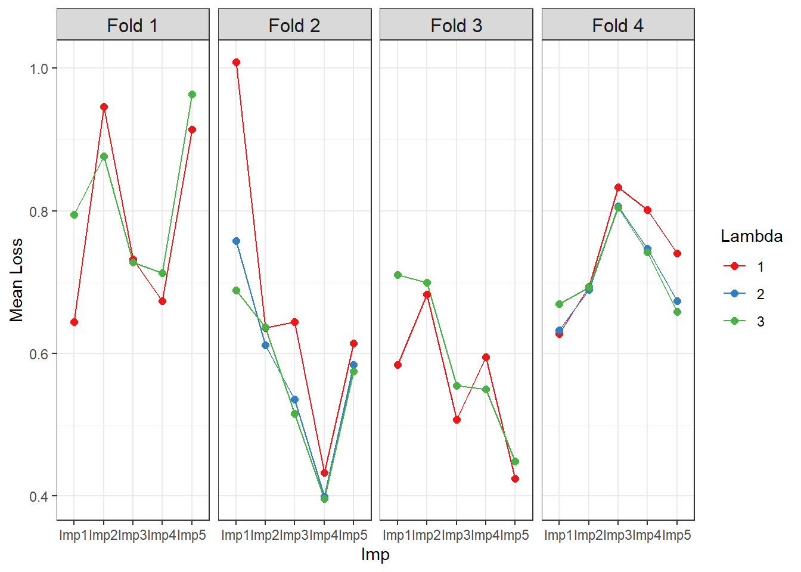

| ID | beta0|1 | X1|1 | X2_Level1|1 | X2_Level2|1 | beta0|2 | X1|2 | X2_Level1|2 | X2_Level2|2 |
|---|---|---|---|---|---|---|---|---|
| ID1 | 1 | 6.5 | 1 | 1 | 0 | 0.0 | 0 | 0 |
| ID2 | 1 | 0.2 | 0 | 0 | 0 | 0.0 | 0 | 0 |
| ID3 | 1 | 3.3 | 1 | 1 | 0 | 0.0 | 0 | 0 |
| ID1 | 0 | 0.0 | 0 | 0 | 1 | 5.9 | 1 | 1 |
| ID2 | 0 | 0.0 | 0 | 0 | 1 | 0.2 | 1 | 0 |
| ID3 | 0 | 0.0 | 0 | 0 | 1 | 3.1 | 0 | 1 |
How to use the impgrplasso package
impgrplasso
Introduction
Least Absolute Shrinkage and Selection Operator (LASSO) regression is a statistical technique to impose penalties on independent variables in a regression in order to produce a more sparse model to improve out-of-sample prediction as well as to enhance the interpretability of the model. The L1 penalty of the LASSO model can shrink independent variables to zero, in effect removing them from regression models. There is no clear way of defining traditional frequentist error estimates (i.e., confidence intervals and p-values) for the coefficient estimates in a LASSO regression model since any null distribution for a given independent variable would inevitably result in some models omitting that variable and others not. For this same reason, traditional approaches for combining regression estimates from multiply imputed data do not apply to LASSO regression.
Multiple imputation is a series of methods for imputing multiple potential values for a missing observation, often based on a probability distribution that is predicted by the other independent and dependent variables to be used in a regression incorporating that variable with missingness. Multiple imputation with chained equations (MICE) is a well-established multiple imputation method that begins by imputing the mean for each missing value of each variable with missingness except for one, using the now “complete” data of other variables to predict values using regression models for the missing values in that selected variable and then use those as imputed values in the next regression imputing values for the next variable, and so on in several iterations of chained regressions. For more explanation see Azur et al. 2011.
The goal of this package is to adapt one of several suggested methods for combining multiple imputation and LASSO regression, namely the MI-LASSO method of Chen and Wang 2013, which stacks imputed data sets and then uses a group LASSO penalty to jointly penalize each imputed version of a given independent variable. The ‘impgrplasso’ package builds off of this method, which provided the best combination of interpretability and low prediction error in the comparative simulation study of Gunn et al. 2023, by incorporating the following additional features:
- The use of a prediction loss measure for optimizing the lambda parameter as suggested by Gunn et al. 2023 rather than using the Bayes Information Criterion (BIC), adding a log-loss measure for LASSO logistic regression prediction error to the mean squared prediction error (MSE) proposed by Gunn et al. in the case of LASSO standard regression
- The incorporation of k-fold cross validation to optimize lambda rather than single training/test splits
- The incorporation of the established ‘grplasso’ package (Meier et al. 2008) for computing group LASSO penalties
- The option to not penalize a subset of independent variables in the LASSO regression
- Automatic detection of dummy variables from the same categorical variable and the application of a group LASSO penalty to those variables
About LASSO Regression
Standard LASSO regression minimizes the loss function below:
\[ \sum_{i=1}^{N}{(y_i-[\beta_0+\sum_{j=1}^{p}{\beta_j x_{ij}]})^2} + \lambda \sum_{j=1}^{p}{\left\lvert{\beta_j}\right\lvert} \]
Notice how the formula to the left of the addition sign is just the function that an ordinary least squares (OLS) regression minimizes (i.e., the sum of the squared residuals). The right of the addition sign is the penalization term, which is the sum of the absolute values of all independent variable coefficients \(\beta_j\) scaled by the parameter \(\lambda\).
About MI-LASSO
The Chen and Wang 2013 MI-LASSO approach to LASSO regression for multiply imputed data minimizes the similar function below:
\[ \sum_{d=1}^{m}{\sum_{i=1}^{N}{(y_{di}-[\beta_{0d}+\sum_{j=1}^{p}{\beta_{dj} x_{dij}}])^2}} + \lambda \sum_{j=1}^{p}\sqrt{\sum_{d=1}^{m}{\beta^2_{dj}}} \]
Here the loss function is being summed over \(m\) imputed data sets. In practice, we stack the imputed data sets into a model matrix in a diagonal fashion, such that each imputed version of a variable gets a unique column and there are columns of ones for each imputed data set-specific intercept. Then the rows are the observations repeated \(m\) times with zero values for all but the relevant \(d\)th column for each variable. As an example, let’s say I have 3 observations and 2 variables (\(X1\) and \(X2\)) with two imputed data sets. \(X1\) is continuous, but \(X2\) is categorical and has three levels, meaning that two dummy variables will be generated (the referent level is omitted). Using the vertical bar to denote the imputed version of each variable and the underscore to denote levels of a categorical variable, I will get the following model matrix:
The parameter \(\lambda\) has to be chosen a priori before each model run, and as \(\lambda\) increases, the degree of penalization increases. Using k-fold cross- validation, a \(\lambda\) value that minimizes out-of-sample prediction loss function can be determined. The range of possible \(\lambda\) will be higher than for a typical LASSO regression because of the high number of imputed columns and the group LASSO penalty between them.
How to use the impgrplasso package
To use impgrplasso, we must first generate a list of imputed data frames. This can be done for example using the mice function from the ‘mice’ package or using the function mice_by_group from this package. The list of data frames must have all categorical columns transformed into dummy variables. This can either be done beforehand or the user can set the argument ‘dummify’ to TRUE (the default), in which case the function will do that transformation. Note that for proper functioning, variable names should not contain underscores (“_“) so that when the dummy variables are generated, an underscore can be added by impgrplasso to separate the variable name (before the added underscore) from its respective levels (after the added underscore).
In this example, we will use MICE and create a list of imputed data frames using the nhanes example data frame included in the ‘mice’ package.
suppressPackageStartupMessages(library(mice))
nh <- nhanes
nh$hyp <- as.factor(nh$hyp - 1)
# above brings "hyp" from a {1, 2} set of unique values to {0, 1}
imp <- mice(nh, printFlag = FALSE)
dlist <- lapply(1:imp$m, function(x) complete(imp, x))mice_by_group
Another option is to use the function mice_by_group to generate group-specific imputed data, for example for imputing within study cohorts or study sites in a multi-cohort study.
Arguments
Data: A data frame containing all variables (columns) to be used in the MICE equations and a column with the grouping variable.groupvar: The column name inDatafor the grouping variable. If this column is not of the class ‘factor’, it will be converted to a factor with the default order of factor levels.miceArgs: These are arguments to be passed on to themicefunction from the ‘mice’ package. These include the number of imputed data frames to be generatedm(default = 10), the maximum number of MICE iterationsmaxit(default = 10), a random seed to be set for the MICE for reproducibilityseed(default = 123), and a Boolean option for verbose printingprintFlag(default = FALSE). All othermicefunction arguments default to the same values as in the ‘mice’ package (see?mice::micefor details). Note that the defaultmandmaxitformiceare both 5, though I set them to 10 for this function for more iterations and better convergence, respectively.
Outputs
The output of mice_by_group is a list of imputed data frames.
Examples
library(mice)
library(impgrplasso)
nh$Group <- as.factor(c(rep(LETTERS[1:2], times = c(6, 7)),
rep(LETTERS[1:2], times = c(6, 6))))
dlist2 <- mice_by_group(nh, "Group", list(m = 5, maxit = 5, seed = 2,
printFlag = FALSE))
#> Warning: Number of logged events: 25impgrplasso
Now that we have a list of imputed data frames, we can use impgrplasso.
Arguments
impdatlist: A list of data frames generated by multiple imputation.lams: Either a single lambda value or a vector of lambda values. If one value is provided, the function will perform the MI-LASSO on the full data using only that single lambda value. If a vector of values is provided, the function will perform cross-validation to obtain fold- and imputation-specific as well as averaged loss values and coefficients for each lambda value so that an optimal lambda can be chosen.outname: A column name for the dependent variable. This can be continuous or binary. In the case of the latter, a LASSO logistic regression will be performed.prednames: Column names for the independent variables. These should be free of underscores. If dummy variables have already been made for the list of data framesimpdatlist, provide those names with underscores between the variable name and the level (e.g., “sex_male”).forcedin: This is an optional vector of column names that should be a subset ofprednamesthat identifies unpenalized variables to be “forced in” to the model due to them not experiencing any shrinkage.kfolds: If a vector of lambda values is provided for the argumentlams,kfoldsprovides the number of cross-validation folds for the cross-validation process. This defaults to 10.kfoldseed: The rows chosen for each k-fold cross-validation are randomly selected once at the beginning of the function and then this selection is used consistently throughout subsequent steps. This value sets a seed for that random process. This defaults to 10.scalecenter: If TRUE (default), the function will scale and center all variables prior to calculations by subtracting the means of each variable and dividing by the standard deviations. This is recommended for LASSO regression, but one can also perform their own form of standardization in the list of data frames and set this to FALSE if they prefer another standardization approach.dummify: If TRUE (default), the function will produce dummy variables for all variables inprednamesof classes ‘factor’ or ‘character’. This can be set to FALSE if one wants to create dummy variables ahead of time and include them in the list of data framesimpdatlist.
Outputs
impgrplasso outputs a list of class ‘impgrplasso’ with the following items:
Coef: Iflamsis a vector, this is a list of fold-specific data frames containing coefficients for each variable for specific imputed data frames and lambda values. Iflamsis a single value, this is a single data frame with variable- and imputation-specific coefficients.MeanCoef: Iflamsis a vector of length > 1, this is a data frame of mean coefficients across imputed data frames for each variable at each fold and lambda value. Iflamsis a single value, this is a data frame with mean coefficients across imputed data frames for each variable.Loss: This appears only iflamsis a vector of length > 1, and it is a data frame showing fold- and imputation-specific loss values and means for each value of lambda.MeanLoss: This appears only iflamsis a vector of length > 1, and it is a data frame showing the mean prediction loss for each lambda value.Model: This appears only iflamsis a single value, and it is the grplasso model object run on the full data.Index: This is the index argument for the grplasso function generated by impgrplasso.allX: This appears only iflamsis a single value, and it is the large stacked matrix of independent variables across imputed data frames generated byimpgrplasso.
A summary method is available for this output, either providing the average prediction loss per lambda value if multiple lambda values were input or the LASSO regression coefficients averaged over imputed data sets if one lambda value was input.
Examples
Now that we have our imputed datalist dlist, we can perform two steps to obtain our optimal LASSO model with those multiply imputed datasets. First we need to search for the optimal lambda value over a range of possible values, and so we set lams to be a vector of values, here seq(1, 3, 1). Notice how we force the covariate "age" to have no shrinkage in the model runs by setting forcedin = "age" for this example. We would “force in” covariates if we strongly believe that they are confounders and that shrinking them would bias our results.
Once we’ve run the multiple lasso regressions (saved as multiple_milasso here), we use summary() to print out a summary of the optimal lambda value. Notice that the lambda values of 2 and 3 both produce identical numbers of variables kept in the model (i.e., dropping "bmi" and "chl") in almost every case. Since the variables kept in the model are the “unshrunk” intercept and "age", the loss values are also identical for those lambda values in those cass. Moving forward, we choose the lambda value with the lowest mean loss, which is 3.
# Searching for the best lambda by running multiple LASSO regressions
multiple_milasso <- impgrplasso(impdatlist = dlist, lams = seq(1, 3, 1),
outname = "hyp", prednames = c("age", "bmi", "chl"), forcedin = "age",
kfolds = 4, kfoldseed = 12)
#> [1] "Fold 1"
#> Lambda: 1 nr.var: 20
#> Lambda: 2 nr.var: 10
#> Lambda: 3 nr.var: 10
#> [1] "Fold 2"
#> Lambda: 1 nr.var: 20
#> Lambda: 2 nr.var: 15
#> Lambda: 3 nr.var: 10
#> [1] "Fold 3"
#> Lambda: 1 nr.var: 15
#> Lambda: 2 nr.var: 10
#> Lambda: 3 nr.var: 10
#> [1] "Fold 4"
#> Lambda: 1 nr.var: 15
#> Lambda: 2 nr.var: 15
#> Lambda: 3 nr.var: 10
summary(multiple_milasso)
#> Mean prediction loss by lambda:
#> 1 2 3
#> 0.6866787 0.6736998 0.6708432We can plot the prediction loss for each lambda value, multiply imputed dataset (“ImpX”), and LASSO regression fold iteration as follows:
library(ggplot2)
plotdat <- reshape2::melt(multiple_milasso$Loss, id.vars = c("Fold", "Lambda"),
measure.vars = paste0("Imp", 1:5),
variable.name = "Imp", value.name = "MeanLoss")
plotdat$Fold <- as.factor(plotdat$Fold)
levels(plotdat$Fold) <- paste0("Fold ", levels(plotdat$Fold))
plotdat$Lambda <- as.factor(plotdat$Lambda)
ggplot(plotdat, aes(x=Imp, y=MeanLoss, color=Lambda)) + theme_bw() +
geom_line(aes(group = Lambda)) + geom_point(size = 2) + facet_grid(~ Fold) +
scale_color_brewer(palette = "Set1") + ylab ("Mean Loss") +
theme(strip.text = element_text(size = 12))
We then apply that optimal lambda in a second step to a single, optimal LASSO regression run, which represents our final results. In order to have a single run of the impgrplasso function, we simply set lams to be a single number. Again "age" is “forced in” for this model. The final results are summarized by calling the summary() function.
# Now with the optimal lambda determined from the last step, we do a single run
# with that optimal lambda
singlerun_milasso <- impgrplasso(impdatlist = dlist, lams = 3, outname = "hyp",
prednames = c("age", "bmi", "chl"),
forcedin = "age")
#> Lambda: 3 nr.var: 15
summary(singlerun_milasso)
#> Mean LASSO regression coefficients:
#> beta0 age bmi chl
#> -2.2883132551 1.4702719276 0.0004690066 0.0000000000